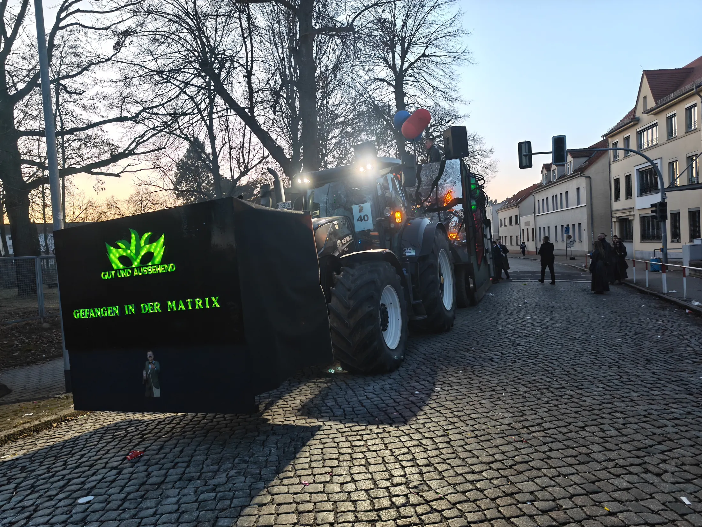
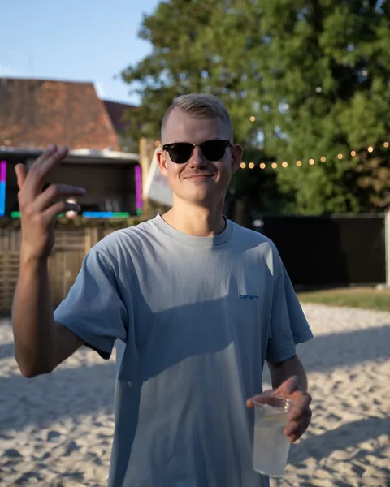
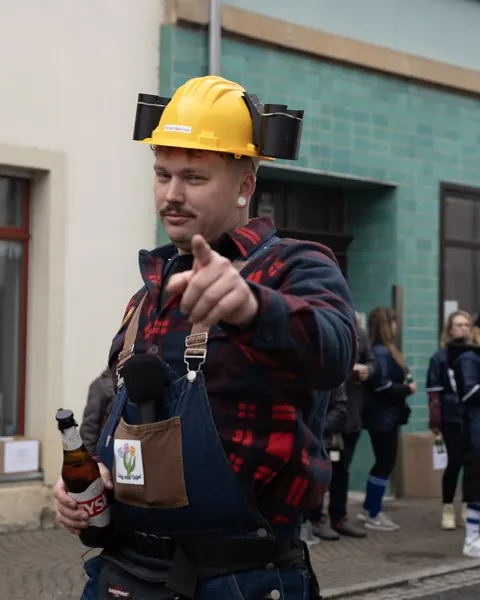
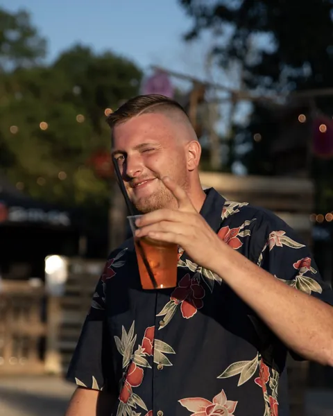
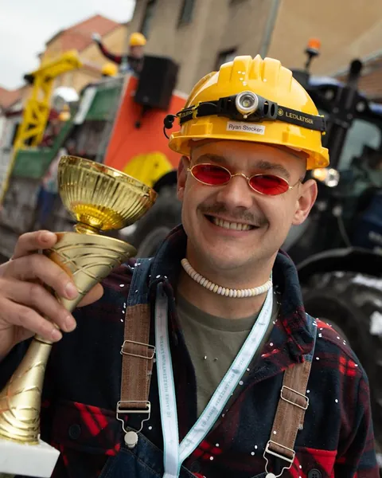
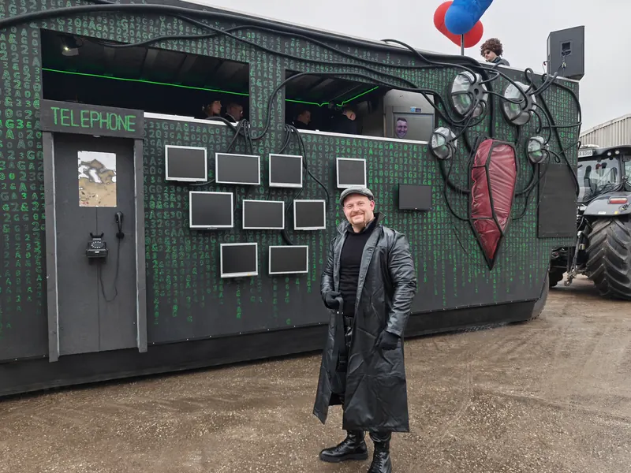
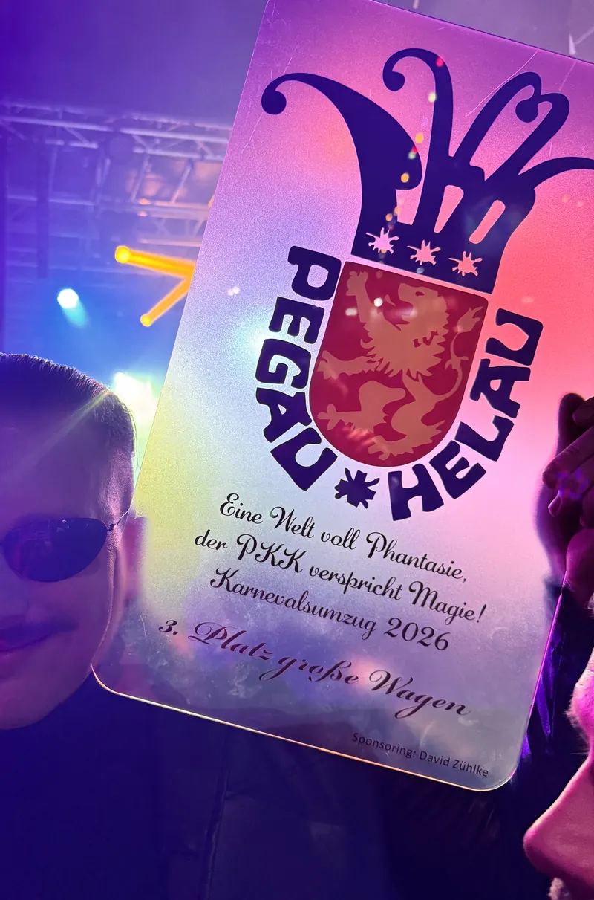

Since 2023
Fasching, selbst gebaut.
Gut und Aussehend ist ein junger Faschingsverein. Wir denken uns jedes Jahr ein Motto aus, bauen dazu unseren Wagen und fahren damit bei den Umzügen in Groitzsch und Pegau mit.
3. Platz große Wagen Karnevalsumzug Pegau 2026 Session 2025 Unser Wagen: Work in Progress Session 2024 Unser Wagen: Up @gut_und_aussehend 800 Follower auf Instagram- 2023gegründet
- 38Mitglieder
- 2Umzüge pro Session, in Groitzsch und Pegau
- 3. Platzgroße Wagen, Karnevalsumzug Pegau 2026
- 800Follower auf Instagram
Der Verein
Das sind wir
Gut und Aussehend gibt es seit 2023. Heute sind wir 38 Mitglieder, die vom ersten Entwurf bis zum letzten Pinselstrich alles selbst machen.
Im Februar fahren wir bei den Umzügen in Pegau und Groitzsch mit. Im September stehen wir mit eigener Bar und Bühne beim Altstadttanz. Dazwischen wird geplant, gebaut und gefeiert.
Du willst mitmachen? Schreib uns.


Seit 2023
Die Gründer
Angefangen hat alles 2023 mit vier Freunden und der Idee, einen eigenen Wagen zu bauen.
-

Oli Gründer -

Richard Gründer -

Robert Gründer -

Toni Gründer


Session 2026
Gefangen in der Matrix
Unser Wagen 2026 war eine fahrende Matrix mit schwarzen Wänden voller grünem Code, Bildschirmen, einer Telefonzelle und einer Spiegelfront mit der Frage »Was ist real?«.


Im grünen Code stecken unsere Initialen G&A. Für die Abendstunden hatte der Wagen eigenes Licht und Laser an Bord.


3. Platz
große Wagen
Karnevalsumzug Pegau 2026


Session 2025
Work in Progress
2025 wurde unser Wagen zur Baustelle: gelber Kran mit Discokugel, Bauzaun, Warnschilder und überall gelbe Helme.


Session 2024
Up
2024 fuhren wir mit dem fliegenden Haus aus dem Film »Up«: bunte Fassade, lila Dach und ein Ballonstrauß am Schornstein. Dazu kamen Pfadfinder in Gelb und Carl im grauen Anzug.


Im September 202620252024
Bar und Bühne beim Altstadttanz
Beim Altstadttanz haben wir unseren eigenen Bereich. In den Tagen davor entstehen Bar, Bühne und Deko aus Paletten, Heuballen und viel Handarbeit.


Folgt uns
Das ganze Jahr auf Instagram
Wagenbau, Kostümproben, Umzüge und Altstadttanz: Auf Instagram zeigen wir, was zwischen den Terminen passiert. 800 Leute folgen uns schon.
@gut_und_aussehend
Der Link öffnet Instagram. Auf dieser Seite selbst laden wir nichts von Instagram nach.
Session 2026/27
Termine
- Februar 2027Umzüge in Pegau und GroitzschTermin folgt
Danke!
Unsere Sponsoren
Hier ist noch Platz. Für die Session 2027 suchen wir unsere ersten Sponsoren.
Für Unternehmen
Sponsor werden
Ein Wagen kostet Material, Technik und viele Stunden. Mit Ihrer Unterstützung wird er größer, heller und besser. Dafür zeigen wir Ihr Unternehmen dort, wo die Leute hinschauen.
-
Publikum an der Strecke
Bei zwei Umzügen pro Session fährt Ihr Logo durch volle Straßen in Groitzsch und Pegau.
-
Ein Wagen, der auffällt
2026 holte unser Wagen in Pegau den 3. Platz bei den großen Wagen. Vor so einem Wagen bleiben die Leute stehen und machen Fotos.
-
Sichtbar das ganze Jahr
Ihr Logo steht auf dieser Website, an unserer Bar beim Altstadttanz und in unseren Beiträgen auf Instagram, wo uns 800 Leute folgen.
Wofür wir das Geld brauchen
- Wagenbau
- Kostüme
- Wurfmaterial
- Licht und Ton
- Gestaltung und Deko
Ob wir Spendenquittungen ausstellen können, klären wir gerade.
Helau!
Schreiben Sie uns
Sie möchten uns unterstützen oder haben eine Frage zum Verein? Wir melden uns innerhalb weniger Tage.